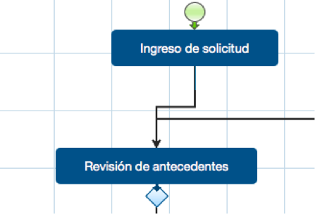
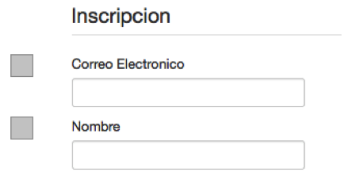
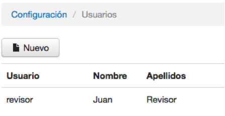
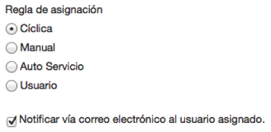
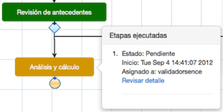
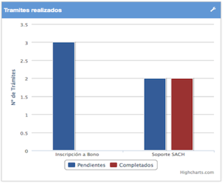
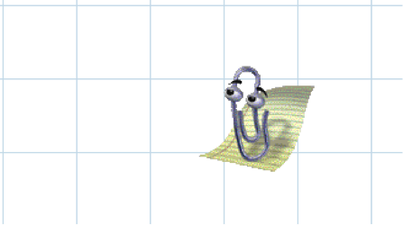

Simple es un sistema modelador de procesos gráficos que permite definir tareas y aplicar lógica de decisiones de negocio, permitiendo la implementación directa de los procesos electrónicos definidos, entregando una solución flexible, amigable y sencilla a instituciones públicas para digitalizar sus trámites tanto internos como externos. Para esto el primer paso que se debe dar para la digitalización del trámite es definir claramente las tareas asociadas al proceso que intervienen el trámite.
El sistema Simple consta de dos bloques de uso, el BackEnd el cual permite el diseño, revisión, seguimiento e implementación de procesos, mientras que el FrontEnd se encarga de la usabilidad de Simple de cara al usuario final para los procesos definidos en el sistema, ambos bloques se tratarán dentro del presente manual ejemplificando cada una de las opciones disponibles mediante un caso de uso real.
Las características destacadas de Simple, son las siguientes:
|  |
Modelador de procesos Simple permite generar fácilmente flujos de trabajo (Workflows), implementando reglas de negocio y lógica en el mínimo tiempo. |
|  |
Diseñador de formularios Además de flujos de trabajo, se podrá diseñar diversos formularios según las necesidades de proceso, disponiendo de distintos campos, tales como textos, áreas de selección (unitario, múltiple), acciones para subir archivos, fechas entre otros, a los cuales inclusive se le pueden añadir reglas de visualización y validación. |
|  |
Administración de usuarios y grupos Simple posee la capacidad de administrar usuarios y grupos con diferentes niveles de accesos a las distintas tareas o etapas del proceso. |
|  |
Gestión de Carga de Trabajo y Notificaciones a través de correo electrónico Permite gestionar la carga de trabajo, para cada una de las tareas definidas por cada proceso, inclusive es posible configurar notificaciones a los usuarios involucrados en el proceso antes o después de la ejecución de una tarea, tanto a usuarios internos como a ciudadanos con un texto configurable. |
|  |
Seguimiento de eventos del Workflow Permite visualizar en tiempo real el seguimiento del trámite digitalizado caso a caso, mediante historial de eventos. |
|
Bandejas de entrada y asignación de tareas Los usuarios disponen de una bandeja donde podrán gestionar las tareas asignadas, e inclusive autoasignarse tareas en caso que alguna tarea haya sido dirigida a un grupo al que pertenezca el usuario. |
|
|  |
Dashboard informativo Permite visualizar estadísticas generales de los trámites realizados o en proceso por la ciudadanía (pendientes v/s completados o según etapas). |
|  |
Asistencia en tiempo real Con Simple recibirás consejos automáticos durante todo el diseño del proceso. |
|
Características Adicionales
El sistema está disponible como Software as a Service (SaaS), por lo que la institución que ha de digitalizar un trámite no debe preocuparse de servidores, monitoreo de recursos ni lenguajes de programación para la disponibilización de tus trámites. |
|